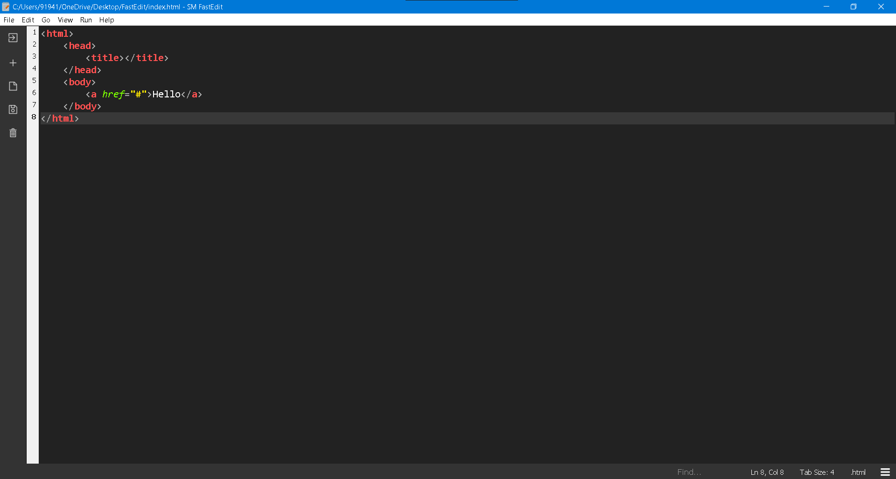

FastEdit is a open source texteditor created and maintained by SM Technology. It is best for web developers. Dark mode of editor makes it perfect environment for coding.

Features that make editor perfect are:
Read only mode.
Full screen mode.
Undo and Redo feature.
Easy shortcuts and tips.
File path in title bar.
Printing supported.
Multi Window mode to edit more than one file.
Open in browser feature to open certain file in web browser or in default editor.
Dark background for eye protection.
Keyboard Shortcuts
FastEdit provides easy keyboard shortcuts to save time from clicking any menuitem.
Here is the list of all keyboard shortcuts
Ctrl+N to create a new file.
Ctrl+O to open a existing file from directory.
Ctrl+Shift+N to create a new window.
Ctrl+S to save current file.
Ctrl+Shift+S to save file in a specific folder.
Ctrl+Shift+P to print current file.
Ctrl+U to undo last action.
Ctrl+Y to redo last action.
Ctrl+X for cut action
Ctrl+C for copy action.
Ctrl+P for paste action.
Ctrl+A to select all text.
Ctrl+Shift+R to make editor readonly.
Ctrl+? for help.
For more help go to .
Source code
FastEdit is a open source and free texteditor. SM FastEdit is written in python language and used HTML for minor components of application.
Author: Shaurya Mishra
Written in: Python, HTML, CSS
Programmer: Shaurya Mishra
Application type: Text editor
Source code is available in github website. Click to go there.